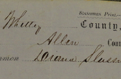

Divorce record of Michael and Diana Slessman of Whitley, Indiana in 1852 (selections)
 An abstract of basic facts, as well as a downloadable PDF of key images from this divorce record for Diana Phillips (of Allen county, Indiana) and Michael Slessman of Whitley County, Indiana, United States in 1852.
Citation and File
Divorce papers of Michael and Diana Slessman, packet 1, filed 26 August 1852, September Term, Whitley County Circuit Court in Chancery; Divorce Packets; Whitley County File Management Office, 220 West Van Buren Street, Suite Lower Level 2, Columbia City, Indiana, United States. [Selected images from divorce papers (PDF, 15 MB)]
Abstracted information
I did not photograph all the papers in this divorce record during my research, and the final judgement in this case is unknown to me.
People
- Plaintiff: Michael Slessman
- Defendant: Diana (Phillips) Slessman
- County clerk: Richard Collins
- County sheriff (Allen): W. H. McDonald
- Diana's child, accused of bastardy: name not given
- Man accused of fathering child with Diana: John Cox
Dates
- Marriage: 24 March 1851 [Allen, Indiana]
- Complaint filed by plaintiff's attorney: 26 August 1852